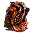

Descrição: Piromancia criada pelo mago Eygil, leal seguidor do Antigo Rei de Ferro. Conjure chamas arrebatadoras na área alvo.
O fogo parece dançar e faz suas vítimas dançarem com ele.
Localização:
Usos: 3
